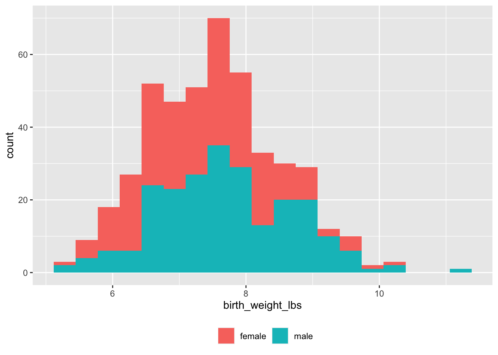
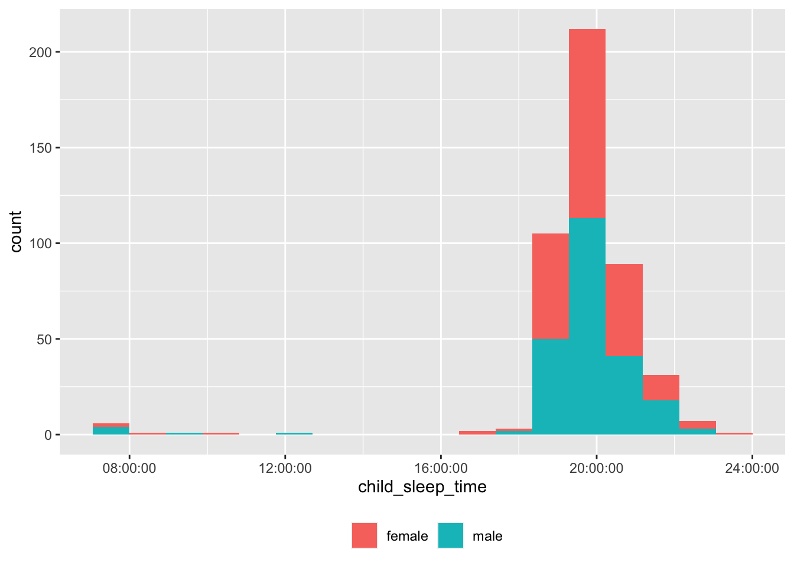
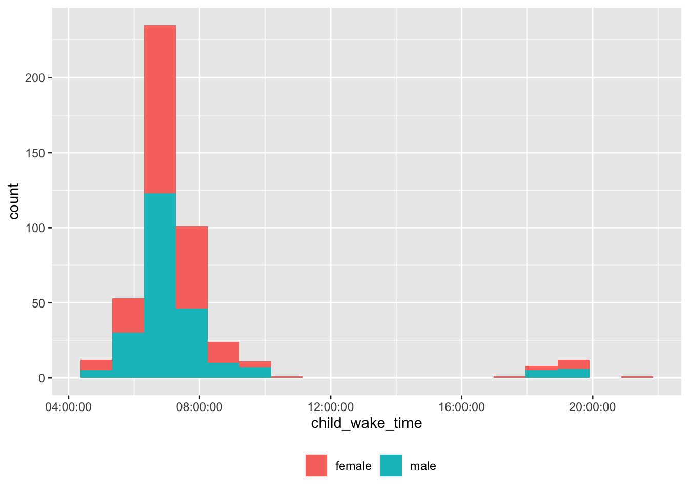
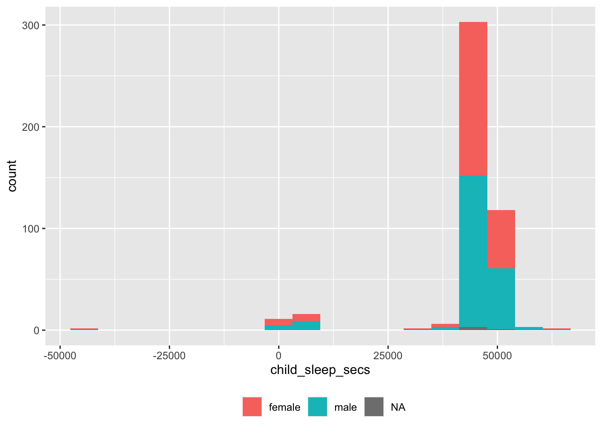
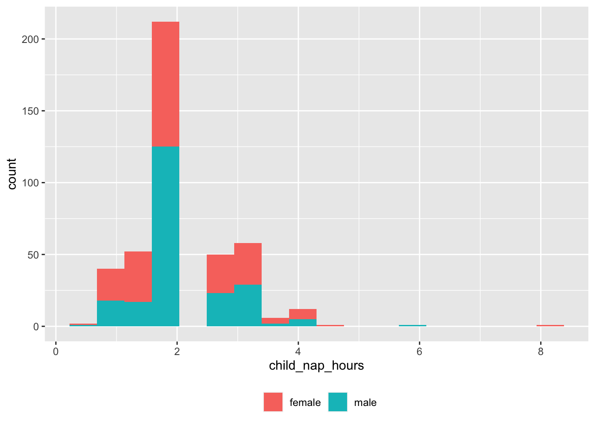
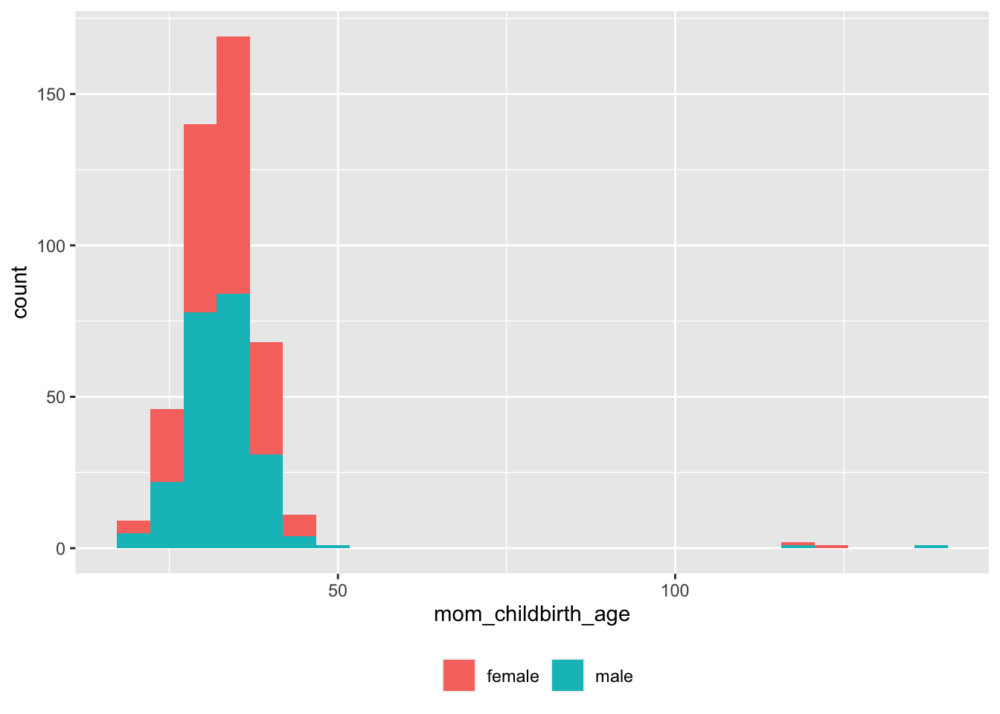

Screening visualizations
These visualizations are intended as a way to test the integrity and utility of the data export and cleaning workflow.
Setup
## ── Attaching core tidyverse packages ──────────────────────── tidyverse 2.0.0 ──
## ✔ dplyr 1.1.2 ✔ readr 2.1.4
## ✔ forcats 1.0.0 ✔ stringr 1.5.0
## ✔ ggplot2 3.4.2 ✔ tibble 3.2.1
## ✔ lubridate 1.9.2 ✔ tidyr 1.3.0
## ✔ purrr 1.0.1
## ── Conflicts ────────────────────────────────────────── tidyverse_conflicts() ──
## ✖ dplyr::filter() masks stats::filter()
## ✖ dplyr::lag() masks stats::lag()
## ℹ Use the conflicted package (<http://conflicted.r-lib.org/>) to force all conflicts to become errorsTo calculate cumulative screening/recruiting calls by site, we have to add an index variable
screen_df <- readr::read_csv(file.path(here::here(), "data/csv/screening/agg/PLAY-screening-2023-06-23.csv"))## Rows: 477 Columns: 51
## ── Column specification ────────────────────────────────────────────────────────
## Delimiter: ","
## chr (42): site_id, subject_number, play_id, child_sex, child_bornonduedate,...
## dbl (8): child_age_mos, child_birthage, child_weight_pounds, child_weight_...
## dttm (1): submit_date
##
## ℹ Use `spec()` to retrieve the full column specification for this data.
## ℹ Specify the column types or set `show_col_types = FALSE` to quiet this message.0.1 Dates & times
To calculate cumulative screening/recruiting calls by site, we have to add an index variable
Calls across time
df |>
dplyr::filter(!is.na(submit_date), !is.na(n_calls), !is.na(site_id)) %>%
ggplot() +
aes(submit_date, n_calls, color = site_id) +
geom_point()(#fig:unnamed-chunk-3)Cumulative screening calls by year and site
Calls by site
calls_by_site_plot <- function(df) {
df |>
filter(!is.na(site_id)) %>%
ggplot() +
aes(fct_infreq(site_id), fill = site_id) +
geom_bar() +
theme(axis.text.x = element_text(
angle = 90,
vjust = 0.5,
hjust = 1
)) + # Rotate text
labs(x = "site") +
theme(legend.position = "none")
}
calls_by_site_plot(df)(#fig:fig-screening-calls-by-site)Cumulative screening calls by site
Demographics
Child age
Child age in months (child_age_mos) by child_sex.
screen_df |>
dplyr::filter(!is.na(child_age_mos),!is.na(child_sex)) |>
ggplot() +
aes(child_age_mos, fill = child_sex) +
geom_histogram(bins = 50)(#fig:fig-age-hist-screening)Histogram of child age at time of recruiting call.
Some of the code to clean the screen_df variables could be incorporated into an earlier stage of the workflow.
0.2 Language
To child
Language(s) spoken to child by child_sex.
df <- screen_df |>
dplyr::mutate(language_spoken_child = stringr::str_replace_all(language_spoken_child, " ", "_"),
language_spoken_home = stringr::str_replace_all(language_spoken_home, " ", "_"))
xtabs(formula = ~ child_sex + language_spoken_child,
data = df)## language_spoken_child
## child_sex english english_other english_spanish english_spanish_other spanish
## female 187 2 30 2 10
## male 182 4 41 1 7At home
## language_spoken_home
## child_sex english english_other english_spanish english_spanish_other spanish
## female 188 2 30 0 10
## male 174 2 45 2 11To child vs. at home
## language_spoken_home
## language_spoken_child english english_other english_spanish
## english 352 1 14
## english_other 1 3 0
## english_spanish 10 0 56
## english_spanish_other 3 0 0
## spanish 0 0 5
## language_spoken_home
## language_spoken_child english_spanish_other spanish
## english 2 4
## english_other 0 0
## english_spanish 0 5
## english_spanish_other 0 0
## spanish 0 120.3 Child health
Child born on due date
## child_bornonduedate
## child_sex no yes
## female 6 224
## male 6 228There are a large number of NAs. Cross-check with the earlier version of the survey. It’s possible that this question was not asked early-on.
Child weight
Must convert pounds and ounces to decimal pounds.
df <- screen_df %>%
dplyr::mutate(.,
birth_weight_lbs = child_weight_pounds + child_weight_ounces/16)
df |>
dplyr::filter(!is.na(birth_weight_lbs), !is.na(child_sex)) |>
dplyr::filter(birth_weight_lbs > 0) |>
ggplot() +
aes(x = birth_weight_lbs, fill = child_sex) +
geom_histogram(binwidth = 0.33) +
theme(legend.position = "bottom") +
theme(legend.title = element_blank())
Birth complications
## child_birth_complications
## child_sex no yes
## female 208 20
## male 212 21screen_df |>
dplyr::filter(!is.na(child_birth_complications_specify)) |>
dplyr::select(child_age_mos, child_sex, child_birth_complications_specify) |>
dplyr::arrange(child_age_mos) |>
knitr::kable(format = 'html') |>
kableExtra::kable_classic()| child_age_mos | child_sex | child_birth_complications_specify |
|---|---|---|
| 11.40697 | male | Respiratory distress, CPAP for a few hours. |
| 11.57133 | female | Had elevated respiratory rate after birth and was on CPAP for 10 hours; 5 days spent in the NICU; no disability/delays/impairments resulted from this |
| 11.63708 | male | Mom was induced because baby had oligohydrosis, also born face up, hypospadias |
| 11.80145 | female | Breached |
| 12.03156 | female | Mother had a second degree tear, Rylie’s heart rate declined later during birth and mother had to do a purple birth, Rylie inhaled meconium and child was put on antibiotics. Mother and child stayed at hospital until day 5. There were temporary respiratory side effects but these went away with antibiotics. |
| 12.35892 | female | episiotomy, mom hemorrhage after birth, baby didn’t urinate first few days |
| 12.45891 | male | Cord was wrapped around the child’s neck. Child had fluid in stomach and lungs when born. Child was transferred to the NICU for 4-5 days for oxygen and antibiotics. He improved as doctors expected. |
| 12.52465 | male | Umbilical cord was wrapped around the baby’s neck - resolved |
| 12.68902 | male | Jaundice and apnea, hospital acquired infaction - all good now |
| 12.75477 | female | Born with Erb’s palsy, hasn’t been to therapy since February and is currently using both arms and hands |
| 13.02186 | male | Respiratory failure sepsis. Baby was in NICU for 1 week. Resolved. |
| 15.91195 | female | Newborn Complication resulted in NICU for 5 days due to apnea and low blood glucose but did not result in any disabilities or long term health concerns. |
| 16.46806 | male | He experienced jaundice and a heart murmur at birth but did not have any long term effects result from this. |
| 16.66804 | female | Breached |
| 16.99403 | female | jaundice |
| 17.71998 | male | Admitted to NICU for neumothroax |
| 17.78572 | male | He was on CPAP after birth due to mother’s preeclampsia |
| 17.81860 | male | Mother had gestational diabetes, so they watched AVI for a bit longer in the NICU. |
| 17.91448 | male | his shoulders got stuck when giving birth, that is why mom had to be induced. mom and baby are perfectly fine |
| 18.21307 | male | No sabía respirar |
| 18.27608 | female | Different blood type from mother, at risk of jaundice |
| 18.41031 | female | low blood sugar, jaundice, in NICU for 2 days |
| 18.70617 | male | Preeclampsia, mother induced, child was a little jaundiced |
| 18.73630 | male | He was perfectly fine, he just didn’t come so they had to do a C-section, other than that there were no complications. |
| 19.03901 | female | meconium in lungs, in the nicu 3-4 days |
| 19.59374 | female | Jaundice and low blood sugar: NICU for 2 days |
| 20.61007 | female | She had a Nicu stay, where she was having seizures in the first 3 days and was put on medication until 4 months, but has been clear since then for anything neurological |
| 22.71532 | male | minor respiratory distress led to short NICU stay |
| 23.37278 | female | when she was born she had some seizures, but she is okay now– was on medication until 4 months of age– all follow ups have been clear |
| 23.66864 | female | She was breach, they went in to try and turn her around, her heart rate was slow so they had to do an emergency c-section. |
| 23.66864 | female | Annie had some liquid in her lungs and they kept her in NICU for three days. |
| 23.66864 | male | Breech, born via C-section |
| 23.80013 | female | Different blood type from mother, at risk of jaundice |
| 23.96450 | male | Excess Amniotic Fluid - Resolved |
| 24.03024 | male | heart surgery at birth |
| 24.12886 | male | rapid heartbeat; possible meconium aspiration |
| 24.17269 | female | breech |
| 24.32610 | male | Swallowed some amniotic fluid, but no long-term complications |
| 25.08218 | female | mom had preeclampsia |
| 25.14656 | female | Jaundice |
| 26.66009 | male | Breech, born via C-section |
Major illnesses or injuries
## child_major_illnesses_injuries
## child_sex no yes
## female 220 7
## male 222 11screen_df |>
dplyr::filter(!is.na(child_illnesses_injuries_specify)) |>
dplyr::select(child_age_mos, child_sex, child_illnesses_injuries_specify) |>
dplyr::arrange(child_age_mos) |>
knitr::kable(format = 'html') |>
kableExtra::kable_classic()| child_age_mos | child_sex | child_illnesses_injuries_specify |
|---|---|---|
| 11.63708 | male | RSV |
| 11.70420 | male | Croup (upper airway infection) |
| 11.80145 | female | OK |
| 11.80145 | female | OK |
| 11.93294 | female | OK |
| 12.03156 | female | OK |
| 12.22880 | female | OK |
| 12.68902 | female | fractured wrist when she was 9 months |
| 12.73285 | male | He had Covid once. |
| 12.76162 | female | RSV when 10 weeks old, hospitalized for 1 week |
| 13.01775 | male | Covid in December but this did NOT result in a visual, auditory, motor, or cognitive disability according to mom |
| 13.02186 | male | Respiratory failure and sepsis after birth that was resolved |
| 14.20118 | female | OK |
| 14.46554 | female | Had a fall but she is fine._OK |
| 16.17494 | female | Child had a fall but she was fine. |
| 17.78435 | male | OK |
| 17.78572 | female | OK |
| 18.04597 | female | broke leg in April - all healed now. slide accident, she was 16 months. in a cast for three weeks, and then a week phantom limping. |
| 18.27608 | female | OK |
| 18.67330 | male | tibial stress factor |
| 18.77055 | male | Child had COVID twice (fever, etc.) |
| 20.67856 | male | Anaphylactic reaction to peanuts |
| 23.54400 | female | Sick quite a bit after her first year, low immunity; three seizures associated with fevers |
| 23.66864 | male | OK |
| 23.70151 | female | OK |
| 23.83300 | male | OK |
| 24.03024 | male | had COVID at 7 months |
| 24.06449 | male | OK |
| 24.91782 | female | She had COVID, and when she was little had an cardiac issue (her heart was “working” too hard) but she was okay soon after (this was first 2-3 months after birth). March of 2021 she had fully recovered from this, and received treatment |
| 25.80539 | male | OK |
| 26.76008 | male | Has had a fall, was a concussion but not diagnosed with any disabilities |
| 32.67724 | male | Pneumonia at 5 months |
| NA | NA | OK |
| NA | NA | anaphylactic reaction to peanuts_OK |
| NA | NA | OK |
0.3.1 Child vision
## child_vision_disabilities
## child_sex no yes
## female 228 0
## male 231 2screen_df |>
dplyr::filter(!is.na(child_vision_disabilities_specify)) |>
dplyr::select(child_age_mos, child_sex, child_vision_disabilities_specify) |>
dplyr::arrange(child_age_mos) |>
knitr::kable(format = 'html') |>
kableExtra::kable_classic()| child_age_mos | child_sex | child_vision_disabilities_specify |
|---|---|---|
| 23.60974 | male | intermittent alternating extrotropia, hyperopiia bilateral, ampliopia |
| 24.03024 | male | lazy eye but corrected |
0.3.2 Child hearing
## child_hearing_disabilities
## child_sex no yes
## female 228 0
## male 231 2screen_df |>
dplyr::filter(!is.na(child_hearing_disabilities_specify)) |>
dplyr::select(child_age_mos, child_sex, child_hearing_disabilities_specify) |>
dplyr::arrange(child_age_mos) |>
knitr::kable(format = 'html') |>
kableExtra::kable_classic()| child_age_mos | child_sex | child_hearing_disabilities_specify |
|---|---|---|
| 16.89541 | male | Failed hearing screenings - concerns about his speech and doctor recommended ruling out hearing issues. Failed first hearing test on 5/10/23 and failed another on 5/19/23. Think it might be related to unresolved ear infection. |
| 32.67724 | male | Temporary hearing loss so tubes in his ears, one still remaining |
0.3.3 Child developmental delays
## child_developmentaldelays
## child_sex no yes
## female 148 2
## male 154 6screen_df |>
dplyr::filter(!is.na(child_developmentaldelays_specify)) |>
dplyr::select(child_age_mos, child_sex, child_developmentaldelays_specify) |>
dplyr::arrange(child_age_mos) |>
knitr::kable(format = 'html') |>
kableExtra::kable_classic()| child_age_mos | child_sex | child_developmentaldelays_specify |
|---|---|---|
| 16.89541 | male | He is seeing a hearing specialist for some worries about hearing delays. Doctor is visiting Jack in the home every 2 weeks. |
| 16.99403 | female | motor delay |
| 18.77055 | male | Lead poisoning |
| 20.67719 | male | Gross motor delay around 10 months; they enrolled in services and after PT, they recovered in 2 months |
| 24.03024 | male | speech therapist for lisp |
| 24.55621 | male | Torticollis, treated with physical therapy and issue was resolved |
| 24.91782 | female | Was in early intervention because of the cardiac issue (she said any baby with this condition qualifies for it– gross motor skills at the time were behind) but she is caught up now. |
| 28.99545 | male | Speech Delay |
Child sleep
This is work yet-to-be-done. The time stamps need to be reformatted prior to visualization.
Bed time
extract_sleep_hr <- function(t) {
t |>
stringr::str_extract("^[0-9]{2}\\:[0-9]{2}\\:[0-9]{2}") |>
hms::as_hms()
}
df <- screen_df |>
dplyr::mutate(child_sleep_time = extract_sleep_hr(child_sleep_time)) |>
dplyr::filter(!is.na(child_sleep_time))
df |>
dplyr::filter(!is.na(child_sleep_time),
!is.na(child_sex)) |>
ggplot() +
aes(child_sleep_time, fill = child_sex) +
geom_histogram(bins = 18) +
theme(legend.position = "bottom") +
theme(legend.title = element_blank())
Some of the bed times are probably not in correct 24 hr time.
df |>
dplyr::filter(child_sleep_time < hms::as_hms("16:00:00")) |>
dplyr::select(site_id, subject_number, child_sleep_time) |>
dplyr::arrange(site_id, subject_number) |>
knitr::kable('html') |>
kableExtra::kable_classic()| site_id | subject_number | child_sleep_time |
|---|---|---|
| CSULB | 006 | 07:30:00 |
| INDNA | 004 | 09:00:00 |
| INDNA | 006 | 07:45:00 |
| OHIOS | 002 | 10:00:00 |
| PRINU | 001 | 12:15:00 |
| PRINU | 018 | 07:30:00 |
| PURDU | 020 | 08:30:00 |
| UCSCR | 011 | 07:30:00 |
| UGEOR | 016 | 07:30:00 |
| UTAUS | 023 | 08:00:00 |
Wake time
df <- screen_df |>
dplyr::mutate(child_wake_time = extract_sleep_hr(child_wake_time)) |>
dplyr::filter(!is.na(child_wake_time))
df |>
dplyr::filter(!is.na(child_wake_time),
!is.na(child_sex)) |>
ggplot() +
aes(child_wake_time, fill = child_sex) +
geom_histogram(bins = 18) +
theme(legend.position = "bottom") +
theme(legend.title = element_blank())
There are some unusual wake times, too.
df |>
dplyr::filter(child_wake_time > hms::as_hms("16:00:00")) |>
dplyr::select(site_id, subject_number, child_wake_time) |>
dplyr::arrange(site_id, subject_number) |>
knitr::kable('html') |>
kableExtra::kable_classic()| site_id | subject_number | child_wake_time |
|---|---|---|
| BOSTU | 001 | 19:30:00 |
| GEORG | 026 | 19:00:00 |
| NYUNI | 999 | 17:00:00 |
| OHIOS | 004 | 18:30:00 |
| OHIOS | 009 | 18:30:00 |
| OHIOS | 012 | 19:30:00 |
| OHIOS | 013 | 18:30:00 |
| OHIOS | 014 | 18:30:00 |
| OHIOS | 018 | 18:45:00 |
| OHIOS | 019 | 19:30:00 |
| OHIOS | 021 | 19:30:00 |
| OHIOS | 029 | 19:30:00 |
| OHIOS | 031 | 19:30:00 |
| OHIOS | 035 | 19:00:00 |
| PRINU | 015 | 19:00:00 |
| PRINU | 018 | 19:45:00 |
| PURDU | 020 | 21:30:00 |
| UCSCR | 035 | 18:30:00 |
| UGEOR | 002 | 19:30:00 |
| UHOUS | 014 | 19:00:00 |
| UTAUS | 013 | 18:00:00 |
| UTAUS | 020 | 18:30:00 |
Sleep duration
df <- screen_df |>
dplyr::mutate(child_sleep_time = extract_sleep_hr(child_sleep_time),
child_wake_time = extract_sleep_hr(child_wake_time)) |>
dplyr::filter(!is.na(child_sleep_time),
!is.na(child_wake_time)) |>
dplyr::mutate(child_sleep_secs = (child_sleep_time - child_wake_time))
df |>
dplyr::filter(!is.na(child_sleep_secs)) |>
ggplot() +
aes(child_sleep_secs, fill = child_sex) +
geom_histogram(bins = 18) +
theme(legend.position = "bottom") +
theme(legend.title = element_blank())## Don't know how to automatically pick scale for object of type <difftime>.
## Defaulting to continuous. Again, there are some unusual values.
df |>
dplyr::filter(child_sleep_secs < 12000) |>
dplyr::select(site_id, subject_number, child_sleep_time, child_wake_time, child_sleep_secs) |>
dplyr::arrange(site_id, subject_number) |>
knitr::kable('html') |>
kableExtra::kable_classic()| site_id | subject_number | child_sleep_time | child_wake_time | child_sleep_secs |
|---|---|---|---|---|
| BOSTU | 001 | 19:30:00 | 19:30:00 | 0 secs |
| CSULB | 006 | 07:30:00 | 07:30:00 | 0 secs |
| GEORG | 026 | 19:45:00 | 19:00:00 | 2700 secs |
| INDNA | 004 | 09:00:00 | 08:00:00 | 3600 secs |
| INDNA | 006 | 07:45:00 | 06:30:00 | 4500 secs |
| NYUNI | 999 | 17:00:00 | 17:00:00 | 0 secs |
| OHIOS | 002 | 10:00:00 | 08:00:00 | 7200 secs |
| OHIOS | 004 | 20:00:00 | 18:30:00 | 5400 secs |
| OHIOS | 009 | 18:30:00 | 18:30:00 | 0 secs |
| OHIOS | 012 | 20:00:00 | 19:30:00 | 1800 secs |
| OHIOS | 013 | 19:30:00 | 18:30:00 | 3600 secs |
| OHIOS | 014 | 20:00:00 | 18:30:00 | 5400 secs |
| OHIOS | 018 | 20:00:00 | 18:45:00 | 4500 secs |
| OHIOS | 019 | 20:30:00 | 19:30:00 | 3600 secs |
| OHIOS | 021 | 20:00:00 | 19:30:00 | 1800 secs |
| OHIOS | 029 | 20:45:00 | 19:30:00 | 4500 secs |
| OHIOS | 031 | 20:30:00 | 19:30:00 | 3600 secs |
| OHIOS | 035 | 20:30:00 | 19:00:00 | 5400 secs |
| PRINU | 015 | 19:00:00 | 19:00:00 | 0 secs |
| PRINU | 018 | 07:30:00 | 19:45:00 | -44100 secs |
| PURDU | 020 | 08:30:00 | 21:30:00 | -46800 secs |
| UCSCR | 011 | 07:30:00 | 06:30:00 | 3600 secs |
| UCSCR | 035 | 20:45:00 | 18:30:00 | 8100 secs |
| UGEOR | 002 | 20:00:00 | 19:30:00 | 1800 secs |
| UGEOR | 016 | 07:30:00 | 08:00:00 | -1800 secs |
| UHOUS | 014 | 19:00:00 | 19:00:00 | 0 secs |
| UTAUS | 013 | 19:30:00 | 18:00:00 | 5400 secs |
| UTAUS | 020 | 20:00:00 | 18:30:00 | 5400 secs |
| UTAUS | 023 | 08:00:00 | 07:00:00 | 3600 secs |
Nap hours
df <- screen_df |>
dplyr::mutate(child_nap_hours = as.numeric(child_nap_hours)) |>
dplyr::filter(!is.na(child_sleep_time)) ## Warning: There was 1 warning in `dplyr::mutate()`.
## ℹ In argument: `child_nap_hours = as.numeric(child_nap_hours)`.
## Caused by warning:
## ! NAs introduced by coerciondf |>
dplyr::filter(!is.na(child_nap_hours),
!is.na(child_sex)) |>
ggplot() +
aes(child_nap_hours, fill = child_sex) +
geom_histogram(bins = 18) +
theme(legend.position = "bottom") +
theme(legend.title = element_blank()) And there are some very long nappers or null values we need to capture.
df |>
dplyr::filter(child_nap_hours > 5) |>
dplyr::select(site_id, subject_number, child_nap_hours) |>
dplyr::arrange(site_id, subject_number) |>
knitr::kable('html') |>
kableExtra::kable_classic()| site_id | subject_number | child_nap_hours |
|---|---|---|
| UMIAM | 003 | 8 |
| UTAUS | 009 | 6 |
Mother
Biological or adoptive
## mom_bio
## child_sex no_adoptive yes
## female 0 213
## male 1 225Age at childbirth
screen_df |>
dplyr::filter(!is.na(mom_childbirth_age), !is.na(child_sex)) |>
ggplot() +
aes(x = mom_childbirth_age, fill = child_sex) +
geom_histogram(bins = 25) +
theme(legend.position = "bottom") +
theme(legend.title = element_blank())
Clearly, there are some impossible (erroneous) maternal ages > 100. Here are details:
old_moms <- screen_df |>
dplyr::filter(mom_childbirth_age > 55)
old_moms |>
dplyr::select(submit_date, site_id, subject_number, mom_childbirth_age) |>
knitr::kable(format = 'html') |>
kableExtra::kable_classic()| submit_date | site_id | subject_number | mom_childbirth_age |
|---|---|---|---|
| 2020-02-25 17:33:28 | GEORG | 007 | 118.92 |
| 2020-02-25 17:58:45 | GEORG | 006 | 118.01 |
| 2022-07-07 15:03:20 | VBLTU | 005 | 121.22 |
| 2023-03-26 14:09:50 | NYUNI | 065 | 136.55 |
Birth country
df <- screen_df |>
dplyr::mutate(mom_birth_country = dplyr::recode(
mom_birth_country,
unitedstates = "US",
united_states = "US",
othercountry = "Other",
other_country = "Other",
refused = "Refused"
))
xtabs(~ mom_birth_country, data = df)## mom_birth_country
## Other Refused US
## 60 1 397df <- screen_df |>
dplyr::mutate(mom_birth_country_specify = stringr::str_to_title(mom_birth_country_specify)) |>
dplyr::filter(!is.na(mom_birth_country_specify)) |>
dplyr::select(child_sex, mom_birth_country_specify)
unique(df$mom_birth_country_specify)## [1] "Montenegro" "Chile" "Uk"
## [4] "Refused" "Australia" "Venezuela"
## [7] "Canada" "India" "Kenya"
## [10] "China" "South Korea" "Costa Rica"
## [13] "England" "Mexico" "Italy"
## [16] "Colombia" "Malaysia" "Argentina"
## [19] "Panama" "United Kingdom" "Bolivia"
## [22] "Phillipines" "Dominican Republic" "Spain"
## [25] "Zimbabwe" "Colomobia" "Guatemala"
## [28] "Ireland" "Ecuador" "Honduras"
## [31] "El Salvador"0.3.4 Education
df <- screen_df |>
dplyr::filter(!is.na(mom_education)) |>
dplyr::select(child_sex, mom_education)
xtabs(~ mom_education, data = df)## mom_education
## associates bachelor_s_deg bachelors diploma
## 15 6 147 17
## doctorate eleventh ged graduate_nodegree
## 64 1 4 9
## graduate_or_pr master_s_degre masters noformalschooling
## 1 3 139 1
## professional professional_d refused somecollege
## 25 2 2 19
## voc_diplima voc_nodiplima
## 1 1This requires some recoding work.
0.3.5 Employment
## mom_employment
## full_time no part_time refused
## 274 103 78 20.3.6 Occupation
This information is available, but would need to be substantially recoded to be useful in summary form.
0.3.7 Jobs number
## mom_jobs_number
## 0 1 2 3 4
## 2 311 34 3 1df <- screen_df |>
dplyr::filter(!is.na(mom_jobs_number),
!is.na(mom_employment))
xtabs(~ mom_jobs_number + mom_employment, data = df)## mom_employment
## mom_jobs_number full_time part_time
## 0 1 1
## 1 249 62
## 2 19 15
## 3 3 0
## 4 1 0Race and ethnicity
# df <- screen_df %>%
# dplyr::mutate(
# .,
# mom_race = dplyr::recode(
# mom_race,
# morethanone = "more_than_one",
# americanindian = "american_indian"
# ),
# mother_ethnicity = dplyr::recode(
# mother_ethnicity,
# hispanic_or_la = "hispanic",
# not_hispanic_o = "not_hispanic",
# nothispanic = "not_hispanic"
# )
# )
# xtabs(formula = ~ mother_race + mother_ethnicity,
# data = df)0.4 Childcare
0.4.1 Types
## childcare_types
## childcare childcare_cent nanny
## 78 3 4
## nanny_babysitt nanny_home nanny_home childcare
## 3 18 6
## nanny_home nanny_nothome nanny_home relative nanny_nothome
## 1 2 6
## nanny_nothome none none relative
## 1 67 33
## relative childcare
## 7This requires some cleaning.
0.4.2 Hours
df <- screen_df |>
dplyr::filter(!is.na(childcare_hours)) |>
dplyr::arrange(childcare_hours)
unique(df$childcare_hours)## [1] "1" "10" "12" "14.5" "15" "16"
## [7] "17.5" "18" "2" "20" "24" "25"
## [13] "27" "3" "3.5" "30" "30-35" "30-40"
## [19] "32" "33" "34" "35" "35-40" "36"
## [25] "37" "4" "40" "40+" "40-45" "42.5"
## [31] "43" "45" "5" "50" "50 to 53" "6"
## [37] "8" "9"This requires some cleaning.
0.4.3 Language
## [1] "Spanish"
## [2] "English"
## [3] "English and Spanish (50/50)"
## [4] "english"
## [5] "test"
## [6] "English and speaks a little bit of Japanese but not directly to Lucas"
## [7] "English and Spanish equally"
## [8] "Spanish at the center"
## [9] "English and Creole"
## [10] "Nanny in Spanish at home. At school both English and Spanish."
## [11] "English and ASL"
## [12] "English (majority of the time) and sometimes Spanish"
## [13] "English and Spanish"
## [14] "English, Mandarin"
## [15] "Spanish (sometimes English)"
## [16] "English (sometimes Spanish 40%)"This requires some cleaning.